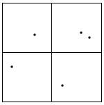
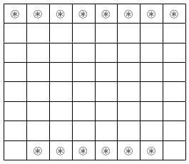

Section6.3Proof Techniques
-
Exercise 3.1.4 The statement \(S(n)\) is that 8 divides \(9^n-1\text{.}\) Clearly we have
\begin{align*} 9^1-1=8\amp =1\cdot 8,\\ 9^2-1=80\amp =10\cdot 8\text{.} \end{align*}Hence \(S(1)\) is true and \(S(2)\) is true as well. Assume that \(S(k)\) is true for some \(k\in\mathbb{N}\text{.}\) It remains to prove that \(S(k+1)\) is true. We have that \(S(k)\) is true, that is, 8 divides \(9^k-1\text{.}\) Hence there exists an integer \(A\) such that \(9^k-1=8\cdot A\text{.}\) It remains to prove that \(9^{k+1}-1\) is a multiple of 8. We have that
\begin{equation*} 9(9^k-1)=8\cdot A\cdot 9\text{.} \end{equation*}Hence we get
\begin{equation*} 9^{k+1}-1=8\cdot A\cdot 9+8=8(9A+1)\text{.} \end{equation*}That is, 8 divides \(9^{k+1}-1\text{.}\) Thus \(S(k+1)\) is true, so the statement is true for all positive integers.
-
Exercise 3.1.5 The statement \(S(n)\) is that 6 divides \(5^{2n-1}+1\text{.}\) We compute \(5^{2n-1}+1\) for some small values:
\begin{align*} 5^{2\cdot 1-1}+1=6\amp =1\cdot 6,\\ 5^{2\cdot 2-1}+1=126\amp =21\cdot 6\text{.} \end{align*}It is now obvious that \(S(1)\) is true and \(S(2)\) is true, too. Assume that \(S(k)\) is true for some \(k\in\mathbb{N}\text{.}\) That is, there exists \(A\) such that
\begin{equation*} 5^{2k-1}+1=6\cdot A\text{.} \end{equation*}We multiply this latter equation by \(5^2:\)
\begin{equation*} 5^2\cdot 5^{2k-1}+5^2=6\cdot A \cdot 5^2\text{.} \end{equation*}We would like to have the expression of \(S(k+1)\) on the left-hand side, that is, \(5^{2(k+1)-1}+1=5^{2k+1}+1\text{.}\) So we subtract 24 to obtain
\begin{equation*} 5^{2k+1}+1=6\cdot A \cdot 5^2-24=6(25A-4)\text{.} \end{equation*}It follows that 6 divides \(5^{2k+1}+1\text{,}\) hence \(S(k+1)\) is true. We have proved that \(S(n)\) is true for all positive integers.
-
Exercise 3.1.6 Here we deal with the sum of the first \(n\) odd integers. For \(n\in\halmaz{1,2,3,4,5}\) we have
Hence the given formula provides correct answers. Let \(S(n)\) be the statement that the sum of the first \(n\) odd integers is \(n^2\text{.}\) We have already proved that \(S(1)\) is true. Assume that \(S(k)\) is true for some \(k\geq 1\text{,}\) that is, \begin{equation*} \sum_{i=1}^k(2i-1)=k^2\text{.} \end{equation*}\(n\) \(\sum_{i=1}^n (2i-1)\) 1 \(1=1^2\) 2 \(1+3=2^2\) 3 \(1+3+5=3^2\) 4 \(1+3+5+7=4^2\) 5 \(1+3+5+7+9=5^2\) It remains to show that \(S(k+1)\) is true, that is,
\begin{equation*} \sum_{i=1}^{k+1}(2i-1)=(k+1)^2\text{.} \end{equation*}The left-hand side can be written as
\begin{equation*} \sum_{i=1}^{k+1}(2i-1)=\left(1+3+\ldots+(2k-1)\right)+(2k+1)\text{.} \end{equation*}By the induction hypotheses we have
\begin{equation*} \left(1+3+\ldots+(2k-1)\right)=k^2\text{,} \end{equation*}so we obtain
\begin{equation*} \left(1+3+\ldots+(2k-1)\right)+(2k+1)=k^2+2k+1=(k+1)^2\text{.} \end{equation*}Thus the statement \(S(k+1)\) is true and the result follows.
-
Exercise 3.1.7 We consider here the sum of the first \(n\) squares, which is
\begin{equation*} 1^2+2^2+\ldots+n^2\text{.} \end{equation*}The statement \(S(n)\) is that
\begin{equation*} \sum_{i=1}^n i^2=\frac{n(n+1)(2n+1)}{6}\text{.} \end{equation*}The statement is clearly true for \(n=1\text{,}\) since \(1^2=\frac{1\cdot 2\cdot 3}{6}\text{.}\) Assume that the statement is true for certain \(k\geq 1\text{,}\) that is,
\begin{equation*} \sum_{i=1}^k i^2=\frac{k(k+1)(2k+1)}{6}\text{.} \end{equation*}Let us study \(S(k+1)\text{.}\) The sum of the first \(k+1\) squares can be written as the sum of the first \(k\) squares increased by \((k+1)^2\text{,}\) that is, we have
\begin{equation*} \sum_{i=1}^{k+1} i^2=\left(\sum_{i=1}^k i^2\right)+(k+1)^2\text{.} \end{equation*}The induction hypotheses says that
\begin{equation*} \sum_{i=1}^k i^2=\frac{k(k+1)(2k+1)}{6}\text{,} \end{equation*}hence we obtain
\begin{equation*} \sum_{i=1}^{k+1} i^2=\frac{k(k+1)(2k+1)}{6}+(k+1)^2\text{.} \end{equation*}The right-hand side equals to
\begin{align*} \amp \frac{k(k+1)(2k+1)}{6}+\frac{6(k+1)^2}{6}=\frac{(k+1)\left(k(2k+1)+6(k+1)\right)}{6}=\\ \amp =\frac{(k+1)(2k^2+7k+6)}{6}=\frac{(k+1)(k+2)(2k+3)}{6}\text{.} \end{align*}Therefore \(S(k+1)\) is true and the problem has been solved.
-
Exercise 3.1.8 We list the sum of the first \(n\) cubes in the following table for \(n\in\halmaz{1,2,3,4}\text{.}\)
The statement \(S(n)\) to prove is that \begin{equation*} \sum_{i=1}^n i^3=\left(\frac{n(n+1)}{2}\right)^2\text{.} \end{equation*}\(n\) \(\sum_{i=1}^n i^3\) 1 \(1^3=1=\left(\frac{1\cdot 2}{2}\right)^2\) 2 \(1^3+2^3=9=\left(\frac{2\cdot 3}{2}\right)^2\) 3 \(1^3+2^3+3^3=36=\left(\frac{3\cdot 4}{2}\right)^2\) 4 \(1^3+2^3+3^3+4^3=100=\left(\frac{4\cdot 5}{2}\right)^2\) We showed that \(S(1),S(2),S(3)\) and \(S(4)\) are true. Assume that for some \(1\leq k\in\mathbb{N}\) the statement \(S(k)\) is true. We try to conclude that \(S(k+1)\) is true. We have
\begin{equation*} \sum_{i=1}^{k+1} i^3= \left(\sum_{i=1}^{k} i^3\right)+(k+1)^3\text{.} \end{equation*}By the induction hypothesis we can write the right-hand side as
\begin{align*} \amp \left(\frac{k(k+1)}{2}\right)^2+(k+1)^3=\frac{k^2(k+1)^2+4(k+1)^3}{4}=\\ \amp \frac{(k+1)^2}{4}(k^2+4k+4)=\left(\frac{(k+1)(k+2)}{2}\right)^2\text{.} \end{align*}It follows that \(S(k+1)\) is true and therefore the identity is true for all positive integers \(n\text{.}\)
-
Exercise 3.1.9 Let \(S(n)\) be the statement that
\begin{equation*} \sum_{i=1}^{n-1}{i(i+1)}=\frac{\left(n-1\right)n\left(n+1\right)}{3}\text{.} \end{equation*}If \(n=2\text{,}\) then the left-hand side is
\begin{equation*} \sum_{i=1}^1{i(i+1)}={2}\text{,} \end{equation*}and the right-hand side is \(\frac{1\cdot 2 \cdot 3}{3}\text{,}\) hence \(S(1)\) is true. Assume that \(S(k)\) is true for some \(1\leq k\in\mathbb{N}\text{.}\) The statement \(S(k+1)\) says that
\begin{equation*} \sum_{i=1}^{k}{i(i+1)}=\frac{k\left(k+1\right)\left(k+2\right)}{3}\text{.} \end{equation*}On the other hand, by the induction hypothesis
\begin{align*} \amp \sum_{i=1}^{k}{i(i+1)}=\left(\sum_{i=1}^{k-1}{i(i+1)}\right)+{k(k+1)}=\\ \amp =\frac{\left(k-1\right)k\left(k+1\right)}{3}+{k(k+1)}=\frac{\left(k-1\right)k\left(k+1\right)+3k(k+1)}{3}=\\ \amp =\frac{k\left(k+1\right)\left(k+2\right)}{3}\text{.} \end{align*}Therefore \(S(k+1)\) is true and the identity
\begin{equation*} \sum_{i=1}^{n-1} {i(i+1)}=\frac{\left(n-1\right)n\left(n+1\right)}{3} \end{equation*}is valid for all positive integers \(n\text{.}\)
-
Exercise 3.1.10 Let \(S(n)\) be the statement that
\begin{equation*} \sum_{i=1}^n\frac{1}{i(i+1)}=\frac{n}{n+1}\text{.} \end{equation*}If \(n=1\text{,}\) then the left-hand side is
\begin{equation*} \sum_{i=1}^1\frac{1}{i(i+1)}=\frac{1}{2}\text{,} \end{equation*}and the right-hand side is \(\frac{1}{2}\text{,}\) hence \(S(1)\) is true. Assume that \(S(k)\) is true for some \(1\leq k\in\mathbb{N}\text{.}\) The statement \(S(k+1)\) says that
\begin{equation*} \sum_{i=1}^{k+1}\frac{1}{i(i+1)}=\frac{k+1}{k+2}\text{.} \end{equation*}On the other hand, by the induction hypothesis
\begin{align*} \amp \sum_{i=1}^{k+1}\frac{1}{i(i+1)}=\left(\sum_{i=1}^{k}\frac{1}{i(i+1)}\right)+\frac{1}{(k+1)(k+2)}=\\ \amp =\frac{k}{k+1}+\frac{1}{(k+1)(k+2)}=\frac{k(k+2)+1}{(k+1)(k+2)}=\\ \amp =\frac{(k+1)^2}{(k+1)(k+2)}=\frac{k+1}{k+2}\text{.} \end{align*}Therefore \(S(k+1)\) is true and the identity
\begin{equation*} \sum_{i=1}^n\frac{1}{i(i+1)}=\frac{n}{n+1} \end{equation*}is valid for all positive integers \(n\text{.}\)
-
Exercise 3.1.11 Let us compute the first few elements of the sequence
Now we compute the values of the formula \(\frac{3}{2}\cdot 2^n+2\cdot (-1)^n\) for \(n\in\halmaz{1,2,3,4,5}\)\(n\) \(a_n\) 1 1 2 8 3 \(a_2+2a_1=10\) 4 \(a_3+2a_2=26\) 5 \(a_4+2a_3=46\)
We checked that \(a_n=\frac{3}{2}\cdot 2^n+2\cdot (-1)^n\) for \(n\in\halmaz{1,2,3,4,5}\text{.}\) Assume that the statement is true for \(S(k-1)\) and \(S(k)\) for some \(2\leq k\in\mathbb{N}\text{,}\) that is, \begin{align*} a_{k-1}\amp =\frac{3}{2}\cdot 2^{k-1}+2\cdot (-1)^{k-1},\\ a_k\amp =\frac{3}{2}\cdot 2^k+2\cdot (-1)^k\text{.} \end{align*}\(n\) \(\frac{3}{2}2^n+2(-1)^n\) 1 1 2 8 3 10 4 26 5 46 The statement for \(k+1\) is that \(a_{k+1}=\frac{3}{2}\cdot 2^{k+1}+2\cdot (-1)^{k+1}\text{.}\) By definition we have that
\begin{equation*} a_{k+1}=a_{k}+2a_{k-1}\text{.} \end{equation*}Hence by the induction hypotheses we obtain
\begin{equation*} a_{k+1}=\frac{3}{2}\cdot 2^k+2\cdot (-1)^k+2\left(\frac{3}{2}\cdot 2^{k-1}+2\cdot (-1)^{k-1}\right)\text{.} \end{equation*}A direct computation yields that
\begin{equation*} a_{k+1}=\frac{3}{2}\cdot 2^{k+1}+2\cdot (-1)^{k+1}\text{,} \end{equation*}which is the statement we wanted to prove. We showed that the given formula is correct.
-
Exercise 3.1.12 We note that there is a solution in Chapter 5 which does not use induction. Here we will prove it by induction. Our statement \(S(n)\) is that the number
\begin{equation*} f(n)=\left(\frac{3-\sqrt{33}}{2}\right)^n+\left(\frac{3+\sqrt{33}}{2}\right)^n \end{equation*}is an integer and it is a multiple of 3. Let us consider the statement for \(n=1\) and 2. If \(n=1\text{,}\) then we get that \(f(1)=3\text{.}\) So it is an integer and it is a multiple of 3. If \(n=2\text{,}\) then we have
\begin{equation*} f(2)=\frac{9-6\sqrt{33}+33}{4}+\frac{9+6\sqrt{33}+33}{4}=21\text{.} \end{equation*}Again we obtained an integer that is divisible by 3. Assume that \(S(k-1)\) and \(S(k)\) are true for some \(2\leq k\in\mathbb{N}\text{.}\) We will use the fact that the numbers \(\frac{3-\sqrt{33}}{2}\) and \(\frac{3+\sqrt{33}}{2}\) are roots of the quadratic equation
\begin{equation*} x^2-3x-6\text{,} \end{equation*}that is, we have
\begin{align*} \left(\frac{3-\sqrt{33}}{2}\right)^2\amp = 3 \cdot \left(\frac{3-\sqrt{33}}{2}\right)+6,\\ \left(\frac{3+\sqrt{33}}{2}\right)^2\amp = 3 \cdot \left(\frac{3+\sqrt{33}}{2}\right)+6\text{.} \end{align*}The induction hypothesis says that \(f(k-1)\) and \(f(k)\) are integers which are multiples of 3. What about the number \(f(k+1)\text{?}\) We have
\begin{align*} \amp f(k+1)=\left(\frac{3-\sqrt{33}}{2}\right)^{k+1}+\left(\frac{3+\sqrt{33}}{2}\right)^{k+1}=\\ \amp \left(\frac{3-\sqrt{33}}{2}\right)^{k-1}\left(3\cdot \left(\frac{3-\sqrt{33}}{2}\right)+6\right) +\left(\frac{3+\sqrt{33}}{2}\right)^{k-1}\left(3\cdot \left(\frac{3+\sqrt{33}}{2}\right)+6\right)=\\ \amp 3\cdot \left(\left(\frac{3-\sqrt{33}}{2}\right)^{k}+\left(\frac{3+\sqrt{33}}{2}\right)^{k}\right)+6\cdot \left(\left(\frac{3-\sqrt{33}}{2}\right)^{k-1}+\left(\frac{3+\sqrt{33}}{2}\right)^{k-1}\right)=\\ \amp 3f(k)+6f(k-1)\text{.} \end{align*}Since \(f(k-1)\) and \(f(k)\) are integers we see that \(f(k+1)\) is an integer and it is a multiple of 3.
-
Exercise 3.1.13 We compute \(a_n\) for some \(n:\)
Let \(S(n)\) be the statement that \(a_n\leq 2\text{.}\) Our computations show that \(S(1)\) is true. Assume that \(S(k)\) is true for some \(k\geq 1\text{,}\) that is, \(a_k\leq 2\text{.}\) We consider the statement \(S(k+1)\text{.}\) By definition of the sequence we have \begin{equation*} a_{k+1}=\sqrt{2+a_k}\text{.} \end{equation*}\(n\) \(a_n\) 1 \(\approx 1.4142\) 2 \(\approx 1.8477\) 3 \(\approx 1.9615\) 4 \(\approx 1.9903\) 5 \(\approx 1.9975\) By the induction hypothesis \(a_k\leq 2\text{,}\) hence
\begin{equation*} a_{k+1}\leq \sqrt{2+2}=2\text{.} \end{equation*}The statement \(S(k+1)\) has been proved and thus we have that \(a_n\leq 2\) for all \(n\in\mathbb{N}\text{.}\)
-
Exercise 3.1.14 We prove the statement by induction. If \(n=1\text{,}\) then the 1-digit integer \(a_1=2\) is divisible by 2. Therefore the statement is true for \(n=1\text{.}\) It is not difficult to deal with the case \(n=2\text{.}\) There are only four possible integers
\begin{equation*} a_1a_2\in\halmaz{11,12,21,22}\text{.} \end{equation*}It is easy to see that \(2^2\) divides 12. Assume that the statement is true for some \(1\leq k\in\mathbb{N}\text{,}\) that is, there exists a \(k\)-digit integer \(a_1a_2\ldots a_k\) which is a multiple of \(2^k\text{.}\) Let us consider the statement for \(k+1\text{.}\) By induction hypothesis we have
\begin{equation*} a_1a_2\ldots a_k=2^k\cdot A\text{.} \end{equation*}We claim that either
\begin{equation*} 10^{k}+a_1a_2\ldots a_k=1a_1a_2\ldots a_k \end{equation*}or
\begin{equation*} 2\cdot 10^{k}+a_1a_2\ldots a_k=2a_1a_2\ldots a_k \end{equation*}is a multiple of \(2^{k+1}\text{.}\) We can rewrite the above integers as follows
\begin{align*} \amp 10^{k}+a_1a_2\ldots a_k=10^k+2^k\cdot A=2^k(5^k+A),\\ \amp 2\cdot 10^{k}+a_1a_2\ldots a_k=2\cdot 10^{k}+2^k\cdot A=2^k(2\cdot 5^k+A)\text{.} \end{align*}If \(A\) is odd, then \(5^k+A\) is even. In this case
\begin{equation*} 1a_1a_2\ldots a_k \end{equation*}is an integer having \(k+1\) digits and it is divisible by \(2^{k+1}\text{.}\) If \(A\) is even, then \(2\cdot 5^k+A\) is even. That is,
\begin{equation*} 2a_1a_2\ldots a_k \end{equation*}is a \((k+1)\)-digit number which is a multiple of \(2^{k+1}\text{.}\)
-
Exercise 3.1.15 (a) The first few elements of the Fibonacci sequence are
\begin{equation*} 1,1,2,3,5,8,13,21,34,55,\ldots \end{equation*}Let us consider the sum of the first \(n\) elements for \(n\in\halmaz{1,2,3,4,5}\)
\begin{align*} n\amp =1: 1,\\ n\amp =2: 1+1=2,\\ n\amp =3: 1+1+2=4,\\ n\amp =4: 1+1+2+3=7,\\ n\amp =5: 1+1+2+3+5=12\text{.} \end{align*}It is easy to see that the identity holds for \(n\in\halmaz{1,2,3,4,5}\text{.}\) Assume that the statement is true for some \(1\leq k\in\mathbb{N}\text{,}\) that is,
\begin{equation*} F_1+F_2+\ldots+F_k=F_{k+2}-1\text{.} \end{equation*}Consider the sum of the first \(k+1\) Fibonacci numbers
\begin{equation*} F_1+F_2+\ldots+F_k+F_{k+1}\text{.} \end{equation*}By induction hypothesis we get
\begin{equation*} F_1+F_2+\ldots+F_k+F_{k+1}=F_{k+2}-1+F_{k+1}\text{.} \end{equation*}By definition \(F_{k+1}+F_{k+2}=F_{k+3}\text{,}\) hence
\begin{equation*} F_1+F_2+\ldots+F_k+F_{k+1}=F_{k+3}-1\text{.} \end{equation*}Therefore the identity holds for all positive integers. (b) Compute \(F_1^2+F_2^2+\ldots+F_n^2\) for \(n\in\halmaz{1,2,3,4,5}\)
\begin{align*} n\amp =1: 1^2=1=F_1F_2,\\ n\amp =2: 1^2+1^2=2=F_2F_3,\\ n\amp =3: 1^2+1^2+2^2=6=F_3F_4,\\ n\amp =4: 1^2+1^2+2^2+3^2=15=F_4F_5,\\ n\amp =5: 1^2+1^2+2^2+3^2+5^2=40=F_5F_6\text{.} \end{align*}That is, the identity is valid for \(n\in\halmaz{1,2,3,4,5}\text{.}\) Assume that the statement is true for some \(1\leq k\in\mathbb{N}\text{,}\) that is,
\begin{equation*} F_1^2+F_2^2+\ldots+F_k^2=F_kF_{k+1}\text{.} \end{equation*}Let us deal with the sum
\begin{equation*} F_1^2+F_2^2+\ldots+F_k^2+F_{k+1}^2\text{.} \end{equation*}Applying the induction hypothesis we obtain
\begin{equation*} (F_1^2+F_2^2+\ldots+F_k^2)+F_{k+1}^2=F_kF_{k+1}+F_{k+1}^2=F_{k+1}(F_k+F_{k+1})\text{,} \end{equation*}and by definition \(F_k+F_{k+1}=F_{k+2}\text{,}\) so we have
\begin{equation*} (F_1^2+F_2^2+\ldots+F_k^2)+F_{k+1}^2=F_{k+1}F_{k+2}\text{.} \end{equation*}Thus the identity holds for all positive integers. (c) Here we consider the identity
\begin{equation*} F_1+F_3+\ldots+F_{2n-1}=F_{2n}\text{.} \end{equation*}If \(n=1\text{,}\) then the left-hand side is \(F_1=1\) and the right-hand side is \(F_2=1\text{.}\) Hence the identity holds. Assume that for some \(1\leq k\in\mathbb{N}\) the identity is valid, that is,
\begin{equation*} F_1+F_3+\ldots+F_{2k-1}=F_{2k}\text{.} \end{equation*}In case of \(k+1\) terms we have
\begin{equation*} F_1+F_3+\ldots+F_{2k-1}+F_{2k+1}\text{.} \end{equation*}By induction we get
\begin{equation*} (F_1+F_3+\ldots+F_{2k-1})+F_{2k+1}=F_{2k}+F_{2k+1}=F_{2k+2}=F_{2(k+1)}\text{.} \end{equation*}Thus the identity is valid for all positive integers. (d) The identity to prove is as follows:
\begin{equation*} F_2+F_4+\ldots+F_{2n}=F_{2n+1}-1\text{.} \end{equation*}If \(n=1\text{,}\) then the left-hand side is \(F_2=1\) and the right-hand side is \(F_3-1=2-1=1\text{.}\) So the identity is valid. Assume that for some \(1\leq k\in\mathbb{N}\) the identity holds, that is,
\begin{equation*} F_2+F_4+\ldots+F_{2k}=F_{2k+1}-1\text{.} \end{equation*}Let us handle the sum for \(k+1\) terms, that is, the sum
\begin{equation*} F_2+F_4+\ldots+F_{2k}+F_{2k+2}\text{.} \end{equation*}It can be written as
\begin{equation*} (F_2+F_4+\ldots+F_{2k})+F_{2k+2}=F_{2k+1}-1+F_{2k+2}=F_{2k+3}-1\text{.} \end{equation*}Thus the identity has been proved for all positive integers.
-
Exercise 3.1.16 (a) First compute \(F_{3n}\) for some \(n\text{,}\) let say for \(n=1,2,3\text{.}\) We have
\begin{align*} \amp F_3=2,\\ \amp F_6=8,\\ \amp F_9=34\text{.} \end{align*}We checked that \(F_{3n}\) is even for \(n=1,2,3\text{.}\) Assume that \(F_{3k}\) is even for some \(1\leq k\in\mathbb{N}\text{.}\) For \(k+1\) we have \(F_{3(k+1)}=F_{3k+3}\text{.}\) By definition
\begin{equation*} F_{3k+3}=F_{3k+2}+F_{3k+1}=F_{3k+1}+F_{3k}+F_{3k+1}=2\cdot F_{3k+1}+F_{3k}\text{.} \end{equation*}By induction \(F_{3k}\) is even, so \(2\cdot F_{3k+1}+F_{3k}\) is even. The statement is true. (b) If \(n=1\text{,}\) then \(F_{5\cdot 1}=5\text{.}\) That is, the property holds for \(n=1\text{.}\) Assume that \(F_{5k}\) is a multiple of 5 for some \(1\leq k\in\mathbb{N}\text{.}\) For \(k+1\) we have
\begin{align*} \amp F_{5(k+1)}=F_{5k+5}=F_{5k+4}+F_{5k+3}=F_{5k+3}+F_{5k+2}+F_{5k+2}+F_{5k+1}=\\ \amp 3F_{5k+2}+2F_{5k+1}=3(F_{5k+1}+F_{5k})+2F_{5k+1}=5F_{5k+1}+3F_{5k}\text{.} \end{align*}It is clear that 5 divides \(5F_{5k+1}\) and induction hypothesis implies that \(3F_{5k}\) is a multiple of 5. Therefore 5 divides \(5F_{5k+1}+3F_{5k}\text{.}\) We proved the property for \(k+1\text{.}\) It follows that \(F_{5n}\) is a multiple of 5 for all \(n \in \mathbb{N}\text{.}\)
-
Exercise 3.2.2 We provide an indirect proof. Assume that \(x\leq 5\) and \(y\leq 5\text{.}\) We obtain that
\begin{equation*} x+y\leq 10\text{,} \end{equation*}a contradiction, since \(x+y>10\text{,}\) by assumption.
-
Exercise 3.2.3 Suppose the opposite of the statement, that is, there exists an integer \(n\) for which \(n^2-2\) is divisible by 4. Then for some \(k\in\mathbb{Z}\) we have \(n^2-2=4k\text{.}\) Hence \(n^2=2(2k+1)\text{.}\) It follows that \(n\) is even, so \(n=2n_1\) for some integer \(n_1\text{.}\) We obtain that
\begin{equation*} 4n_1^2=2(2k+1)\text{.} \end{equation*}After dividing the equation by 2 we get
\begin{equation*} 2(n_1^2-k)=1\text{,} \end{equation*}a contradiction since 2 does not divide 1.
-
Exercise 3.2.4 Assume the opposite, that is, the number \(\sqrt{2}+\sqrt{3}\) is rational. Then there exist \(a\) and \(b\) such that \(\sqrt{2}+\sqrt{3}=\frac{a}{b}\) for some \(a\in\mathbb{Z}\) and \(b\in\mathbb{N}\) and the greatest common divisor of \(a\) and \(b\) is 1. Squaring both sides of the equation \(\sqrt{2}+\sqrt{3}=\frac{a}{b}\) we get
\begin{equation*} 2+2\sqrt{6}+3=\frac{a^2}{b^2}\text{.} \end{equation*}That is,
\begin{equation*} \sqrt{6}=\frac{a^2-5b^2}{2b^2}\text{.} \end{equation*}On the right-hand side there is a rational number, so to get a contradiction we have to prove that \(\sqrt{6}\) is irrational. We prove it indirectly. Assume that \(\sqrt{6}\) is rational. Then there exist \(c\) and \(d\) such that \(\sqrt{6}=\frac{c}{d}\) for some \(c\in\mathbb{Z}\) and \(d\in\mathbb{N}\) and the greatest common divisor of \(c\) and \(d\) is 1. We obtain that
\begin{equation*} 6d^2=c^2\text{,} \end{equation*}that is, \(c\) is even. Therefore \(c=2c_1\) for some \(c_1\text{.}\) It follows that
\begin{equation*} 6d^2=4c_1^2\Rightarrow 3d^2=2c_1^2\text{.} \end{equation*}We have that 2 divides \(3d^2\text{.}\) Since 2 does not divide 3 it must divide \(d^2\text{.}\) It means that \(d^2\) is even, so \(d\) is even, a contradiction. We have proved that \(\sqrt{6}\) is irrational and thus we have that \(\sqrt{2}+\sqrt{3}\) is irrational.
-
Exercise 3.2.5 Suppose the opposite of the statement, that is, there exists \(x=\frac{p}{q}\) with \(p\in\mathbb{Z},q\in\mathbb{N}\) and \(\gcd(p,q)=1\) such that
\begin{equation*} a\left(\frac{p}{q}\right)^2+b\frac{p}{q}+c=0\text{.} \end{equation*}Multiply the equation by \(q^2\) to obtain (we note that \(q\neq 0\))
\begin{equation*} ap^2+bpq+cq^2=0\text{.} \end{equation*}Assume that \(p\) is even and \(q\) is odd. In this case \(ap^2\) is even, \(bpq\) is even and \(cq^2\) is odd. Hence \(ap^2+bpq+cq^2\) is odd, a contradiction. Now assume that \(p\) is odd and \(q\) is even. Here we obtain that \(ap^2\) is odd, \(bpq\) is even and \(cq^2\) is even. Again we get a contradiction. Finally, assume that \(p\) is odd and \(q\) is odd. We get that \(ap^2\) is odd, \(bpq\) is odd and \(cq^2\) is odd, so \(ap^2+bpq+cq^2\) is odd, a contradiction. We remark that the case \(p\) is even, \(q\) is even is not possible since \(\gcd(p,q)=1\text{.}\) The statement follows.
-
Exercise 3.2.6 Assume that the statement is false, that is,
\begin{align*} a_1\amp \lt \frac{a_1+a_2+\ldots+a_n}{n},\\ a_2\amp \lt \frac{a_1+a_2+\ldots+a_n}{n},\\ \amp \vdots\\ a_n\amp \lt \frac{a_1+a_2+\ldots+a_n}{n}\text{.} \end{align*}Take the sum of the above inequalities to get
\begin{equation*} a_1+a_2+\ldots+a_n\lt n\cdot\left(\frac{a_1+a_2+\ldots+a_n}{n}\right)=a_1+a_2+\ldots+a_n\text{.} \end{equation*}That is, we obtained a contradiction and the statement is proved.
-
Exercise 3.2.7 We provide an indirect proof. Assume that there exists a positive integer \(n\) for which
\begin{equation*} \gcd(F_n,F_{n+1})=d>1\text{.} \end{equation*}That is, \(d\) divides \(F_n\) and \(d\) divides \(F_{n+1}\text{.}\) Then \(d\) divides the difference of these two Fibonacci numbers. The difference is equal to
\begin{equation*} F_{n+1}-F_n=F_{n-1}\text{.} \end{equation*}Since \(d\) divides the left-hand side we obtain that \(d\) divides the right-hand side, that is, \(d\mid F_{n-1}\text{.}\) We apply the previous argument again
\begin{equation*} d\mid F_n\mbox{ and } d\mid F_{n-1}\mbox{ hence } d\mid (F_n-F_{n-1})\text{.} \end{equation*}In this way we get that \(d\mid F_{n-2}\text{.}\) Now we have that \(d\mid F_{n-1}\) and \(d\mid F_{n-2}\text{,}\) so \(d\mid (F_{n-1}-F_{n-2})\text{.}\) Since \(F_{n-1}-F_{n-2}=F_{n-3}\) we obtain that \(d\) divides \(F_{n-3}\text{.}\) We continue this process to reach a contradiction, namely that \(d\mid F_2=1\) and \(d\mid F_1=1\text{.}\) Hence for consecutive Fibonacci numbers \(F_n\) and \(F_{n+1}\) we have
\begin{equation*} \gcd(F_n,F_{n+1})=1\text{.} \end{equation*} -
Exercise 3.3.2 First we solve the equation \(5x_1+7x_2=1\) in integers \(x_1,x_2\) by applying the Euclidean algorithm. We get that
\begin{equation*} 5\cdot 3+7\cdot(-2)=1\text{,} \end{equation*}therefore
\begin{equation*} (3n,-2n) \end{equation*}is a solution to the equation \(5x_1+7x_2=n\text{.}\) By Theorem 3.3.1 we obtain a parametric formula
\begin{equation*} (3n-7t,-2n+5t) t\in\mathbb{Z} \end{equation*}for the integer solutions \((x_1,x_2)\) of the equation \(5x_1+7x_2=n\text{.}\) To have non-negative solutions we need
\begin{align*} 3n-7t\amp \geq 0\Rightarrow t\leq \frac{3n}{7}\\ -2n+5t\amp \geq 0\Rightarrow t\geq \frac{2n}{5}\text{.} \end{align*}So we have the following inequalities
\begin{equation*} \frac{2n}{5}\leq t\leq \frac{3n}{7}\text{.} \end{equation*}If there is a \(t\in\mathbb{Z}\) in the interval \([\frac{2n}{5},\frac{3n}{7}]\text{,}\) then \(n\) can be represented in the form \(5x_1+7x_2\text{.}\) Denote by \(I_n\) the set \(\halmazvonal{t}{\frac{2n}{5}\leq t\leq \frac{3n}{7}, t\in\mathbb{Z}}\text{.}\)
Hence \(n=23\) cannot be represented. However for all \(n\in\halmaz{24,25,26,27,28}\) we have solutions. From these solutions we can easily obtain solutions for all \(n\geq 24\text{.}\)\(n\) \(I_n\) \(n\) \(I_n\) \(n\) \(I_n\) \(n\) \(I_n\) 1 \(\emptyset\) 8 \(\emptyset\) 15 \(\halmaz{ 6 }\) 22 \(\halmaz{ 9 }\) 2 \(\emptyset\) 9 \(\emptyset\) 16 \(\emptyset\) 23 \(\emptyset\) 3 \(\emptyset\) 10 \(\halmaz{ 4 }\) 17 \(\halmaz{ 7 }\) 24 \(\halmaz{ 10 }\) 4 \(\emptyset\) 11 \(\emptyset\) 18 \(\emptyset\) 25 \(\halmaz{ 10 }\) 5 \(\halmaz{ 2 }\) 12 \(\halmaz{ 5 }\) 19 \(\halmaz{ 8 }\) 26 \(\halmaz{ 11 }\) 6 \(\emptyset\) 13 \(\emptyset\) 20 \(\halmaz{ 8 }\) 27 \(\halmaz{ 11 }\) 7 \(\halmaz{ 3 }\) 14 \(\halmaz{ 6 }\) 21 \(\halmaz{ 9 }\) 28 \(\halmaz{ 12 }\) -
Exercise 3.3.3 An integer solution to the equation \(4x_1+5x_2=1\) is
\begin{equation*} (x_1,x_2)=(-1,1)\text{.} \end{equation*}Hence we have a particular solution
\begin{equation*} (x_1,x_2)=(-n,n) \end{equation*}in case of the equation \(4x_1+5x_2=n\text{.}\) It is now clear that all solutions can be obtained from the parametrization
\begin{equation*} (-n-5t,n+4t) t\in\mathbb{Z}\text{.} \end{equation*}To have non-negative solutions one needs
\begin{align*} -n-5t\amp \geq 0\Rightarrow t\leq \frac{-n}{5}\\ n+4t\amp \geq 0\Rightarrow t\geq \frac{-n}{4}\text{.} \end{align*}Thus we have
\begin{equation*} -\frac{n}{4}\leq t\leq -\frac{n}{5}\text{.} \end{equation*}Denote by \(I_n\) the set \(\halmazvonal{t}{-\frac{n}{4}\leq t\leq -\frac{n}{5}, t\in\mathbb{Z}}\text{.}\) We determine \(I_n\) for \(1\leq n\leq 15\text{.}\)
So we get that \(n=11\) cannot be represented in the appropriate form. The solutions for \(n\in\halmaz{12,13,14,15}\) can be used to determine solutions for \(n\geq 12\text{.}\) In case of 13 we have \begin{equation*} 13=4\cdot 2+5\cdot 1\text{.} \end{equation*}\(n\) \(I_n\) \(n\) \(I_n\) \(n\) \(I_n\) 1 \(\emptyset\) 6 \(\emptyset\) 11 \(\emptyset\) 2 \(\emptyset\) 7 \(\emptyset\) 12 \(\halmaz{ -3 }\) 3 \(\emptyset\) 8 \(\halmaz{ -2 }\) 13 \(\halmaz{ -3 }\) 4 \(\halmaz{ -1 }\) 9 \(\halmaz{ -2 }\) 14 \(\halmaz{ -3 }\) 5 \(\halmaz{ -1 }\) 10 \(\halmaz{ -2 }\) 15 \(\halmaz{ -3 }\) It implies that
\begin{equation*} 4(k+3)+1=4(k+2)+5\cdot 1 k\in\mathbb{N}\cup\halmaz{0}\text{.} \end{equation*}Thus, if \(n=4K+1\text{,}\) then \((x_1,x_2)=(K-1,1),K\geq 1\text{.}\)
-
Exercise 3.3.4 We can rewrite the equation as
\begin{equation*} 2(2x_1+3x_2)+9x_3=n \end{equation*}and another possibility is as follows
\begin{equation*} 4x_1+3(2x_2+3x_3)=n\text{.} \end{equation*}We will use the second form because the largest coefficient is 4 while in case of the first form the largest coefficient is 9. So we have
\begin{equation*} 4x_1+3y_1=n\text{.} \end{equation*}A particular solution is \((n,-n)\text{,}\) therefore we get
\begin{align*} x_1\amp =n+3t,\\ y_1\amp =-n-4t \end{align*}for some \(t\in\mathbb{Z}\text{.}\) We have that \(y_1=2x_2+3x_3=-n-4t\text{.}\) This equation has a particular solution \((n-2t,-n)\text{,}\) therefore we obtain that
\begin{align*} x_2\amp =n-2t+3s,\\ x_3\amp =-n-2s \end{align*}for some \(s,t\in\mathbb{Z}\text{.}\) That is, the parametrization of the integral solution of the equation is given by
\begin{align*} x_1\amp =n+3t,\\ x_2\amp =n-2t+3s,\\ x_3\amp =-n-2s \end{align*}for some \(s,t\in\mathbb{Z}\text{.}\)
-
Exercise 3.3.5 In the previous exercise we determined the parametrization of the integer solutions of the equation. It is as follows
\begin{align*} x_1\amp =n+3t,\\ x_2\amp =n-2t+3s,\\ x_3\amp =-n-2s \end{align*}for some \(s,t\in\mathbb{Z}\text{.}\) We would like to have only non-negative integer solutions hence we get the system of inequalities
\begin{align*} 0\amp \leq n+3t,\\ 0\amp \leq n-2t+3s,\\ 0\amp \leq -n-2s\text{.} \end{align*}We easily obtain upper bound for \(s\) and lower bound for \(t\) as follows
\begin{align*} -\frac{n}{3}\amp \leq t,\\ -\frac{n}{2}\amp \geq s\text{.} \end{align*}Our system of inequalities implies that
\begin{align*} -2n\leq \amp 6t\leq 3n+9s,\\ -2n+4t\leq \amp 6s\leq -3n\text{.} \end{align*}That is,
\begin{align*} -5n \amp \leq 9s,\\ 4t \amp \leq -n\text{.} \end{align*}Now we have lower bound for \(s\) and upper bound for \(t\text{.}\) Define the intervals \(I_s,I_t\) as follows \(I_s=[-\frac{5n}{9},-\frac{n}{2}]\) and \(I_t=[-\frac{n}{3},-\frac{n}{4}]\text{.}\) The length of \(I_s\) is at least 1 if \(n\geq 18\) and the length of \(I_t\) is at least 1 if \(n\geq 12\text{.}\) Therefore the equation has a non-negative integer solution if \(n\geq 18\text{.}\) It remains to handle the cases \(1\leq n\leq 17\text{.}\)
Thus the largest positive integer \(n\) for which the equation \begin{equation*} 4x_1+6x_2+9x_3=n \end{equation*}\(n\) integer(s) in \(I_s\) integer(s) in \(I_t\) solution(s): \((x_1,x_2,x_3)\) 1 - - - 2 -1 - - 3 - -1 - 4 -2 -1 \((1,0,0)\) 5 - - - 6 -3 -2 \((0,1,0)\) 7 - -2 - 8 -4 -2 \((2,0,0)\) 9 -5 -3 \((0,0,1)\) 10 -5 -3 \((1,1,0)\) 11 -6 -3 - 12 -6 -4,-3 \((0,2,0),(3,0,0)\) 13 -7 -4 \((1,0,1)\) 14 -7 -4 \((2,1,0)\) 15 -8 -5,-4 \((0,1,1)\) 16 -8 -5,-4 \((1,2,0),(4,0,0)\) 17 -9 -5 \((2,0,1)\) has no non-negative integer solution is 11.
Exercise 3.4.6 The pigeonholes are the possible birthdays, there are 366 pigeonholes. There are 367 people (playing the role of pigeons). Therefore there is at least one pigeonhole containing at least two people.
Exercise 3.4.7 The pigeonholes are the possible birthdays, so there are 366 pigeonholes. There are 1500 people and \(\frac{1500}{366}\approx 4.098\text{,}\) hence there is at least one pigeonhole containing at least 4 people. That means that at least 4 people were born on the same day of the year.
-
Exercise 3.4.8 We define the pigeonholes as disjoint subsets of the set
\begin{equation*} \halmaz{1,2,3,4,5,6,7,8,9,10,11,12}\text{,} \end{equation*}that is,
\begin{equation*} \halmaz{1,12},\halmaz{2,11},\halmaz{3,10},\halmaz{4,9},\halmaz{5,8},\halmaz{6,7}\text{.} \end{equation*}The pigeons are the selected integers. We have six pigeonholes and seven pigeons, therefore there exists a subset containing two selected integers. The subsets are constructed in such a way that the sum of the elements are 13, so the sum of the two integers belonging to the same subset is 13.
-
Exercise 3.4.9 The pigeons are the 11 chosen integers. We define the pigeonholes as follows:
\begin{align*} \amp \halmaz{1,2},\halmaz{3,4},\halmaz{5,6},\halmaz{7,8},\halmaz{9,10},\\ \amp \halmaz{11,12},\halmaz{13,14},\halmaz{15,16},\halmaz{17,18},\halmaz{19,20}\text{.} \end{align*}There are 10 pigeonholes and 11 pigeons, so there exists a pigeonhole containing 2 pigeons. Thus the statement is true.
Exercise 3.4.10 We divide the unit square into four smaller squares:  The subsquares are the pigeonholes and the points are the pigeons. Hence by the pigeonhole principle there are at least two points in the same subsquare. The largest distance in a subsquare is the length of the diagonal which is \(\sqrt{2}/2\text{.}\) The statement is proved.
Exercise 3.4.11 We can write the elements of \(A\) in the form \(2^a\cdot b\text{,}\) where \(a\geq 0\) and \(b\) is an odd integer between 1 and 99. There are 50 odd integers in the interval \([1,2,\ldots,100]\) therefore the pigeonhole principle implies that among the 51 integers there are at least two with the same \(b\text{.}\) That is, we have two integers \(2^{a_1}\cdot b\) and \(2^{a_2}\cdot b\text{.}\) If \(a_1\lt a_2\text{,}\) then \(2^{a_1}\cdot b\) divides \(2^{a_2}\cdot b\text{.}\) The statement is proved.
Exercise 3.4.12 We apply Theorem 3.4.3. Here the pigeonholes are the grades, so \(n=5\text{.}\) There are \(m_1\) students who get grade 1, \(m_2\) students who get grade 2 etc. According to the theorem one needs \(m_1+m_2+m_3+m_4+m_5-5+1\) students to ensure that for some \(i\) \(m_i\) students get the same grade. Hence we take \(m_1=m_2=m_3=m_4=m_5=4\text{.}\) Therefore there must be at least 16 students in the class.
Exercise 3.4.13 We note that it is possible to place 14 bishops such that they cannot hit each other, a solution is given by  It remains to show that it is not possible to place more than 14 bishops in such a way that they can not hit each other. A natural idea is to divide the 64 chess squares into 14 groups such that if two bishops are in the same group then they can hit each other. We can produce 14 such groups
4 8 5 9 6 10 7 11 8 4 9 5 10 6 11 7 3 9 4 10 5 11 6 12 9 3 10 4 11 5 12 6 2 10 3 11 4 12 5 13 10 2 11 3 12 4 13 5 1 11 2 12 3 13 4 14 11 1 12 2 13 3 14 4 -
Exercise 3.5.2 (a) The first card is \(7\clubsuit\text{,}\) hence the suit of the hidden card is \(\clubsuit\text{.}\) The distance can be obtained from the following table
That is, we have \begin{equation*} d(7\clubsuit,\mbox{hidden card} )=1\text{.} \end{equation*}distance order of the 3 cards 1 \(3\diamondsuit,J\diamondsuit,A\spadesuit\) 2 \(3\diamondsuit,A\spadesuit,J\diamondsuit\) 3 \(J\diamondsuit,3\diamondsuit,A\spadesuit\) 4 \(J\diamondsuit,A\spadesuit,3\diamondsuit\) 5 \(A\spadesuit,3\diamondsuit,J\diamondsuit\) 6 \(A\spadesuit,J\diamondsuit,3\diamondsuit\) Thus the hidden card is \(8\clubsuit\text{.}\) (b) The suit of the secret card is \(\diamondsuit\) since the first card in the sequence is \(J\diamondsuit\text{.}\) It remains to decode the distance of the secret card and \(J\diamondsuit:\)
We get that the distance is 2, so the secret card is \(K\diamondsuit\text{.}\) (c) It is clear that the suit of the hidden card is \(\heartsuit\text{.}\) We can determine the distance using the following tabledistance order of the 3 cards 1 \(9\clubsuit,8\heartsuit,Q\heartsuit\) 2 \(9\clubsuit,Q\heartsuit,8\heartsuit\) 3 \(8\heartsuit,9\clubsuit,Q\heartsuit\) 4 \(8\heartsuit,Q\heartsuit,9\clubsuit\) 5 \(Q\heartsuit,9\clubsuit,8\heartsuit\) 6 \(Q\heartsuit,8\heartsuit,9\clubsuit\)
In this case the distance is 6, therefore the hidden card is \(2\heartsuit\text{.}\) (d) The first card is \(10\diamondsuit\text{,}\) so the suit of the hidden card is \(\diamondsuit\text{.}\) It remains to figure out the distance.distance order of the 3 cards 1 \(6\diamondsuit,J\diamondsuit,10\heartsuit\) 2 \(6\diamondsuit,10\heartsuit,J\diamondsuit\) 3 \(J\diamondsuit,6\diamondsuit,10\heartsuit\) 4 \(J\diamondsuit,10\heartsuit,6\diamondsuit\) 5 \(10\heartsuit,6\diamondsuit,J\diamondsuit\) 6 \(10\heartsuit,J\diamondsuit,6\diamondsuit\)
The order of the remaining three cards is \(4\spadesuit,2\spadesuit,5\diamondsuit\text{,}\) hence the distance is 6. Thus the announced hidden card is \(3\diamondsuit\text{.}\) (e) It is easy to see that the suit of the hidden card is \(\spadesuit\text{.}\) We can determine the distance using the following tabledistance order of the 3 cards 1 \(5\diamondsuit,2\spadesuit,4\spadesuit\) 2 \(5\diamondsuit,4\spadesuit,2\spadesuit\) 3 \(2\spadesuit,5\diamondsuit,4\spadesuit\) 4 \(2\spadesuit,4\spadesuit,5\diamondsuit\) 5 \(4\spadesuit,5\diamondsuit,2\spadesuit\) 6 \(4\spadesuit,2\spadesuit,5\diamondsuit\)
That is, the distance of the two cards is 2. Therefore the hidden card is \(10\spadesuit\text{.}\)distance order of the 3 cards 1 \(7\diamondsuit,3\heartsuit,7\heartsuit\) 2 \(7\diamondsuit,7\heartsuit,3\heartsuit\) 3 \(3\heartsuit,7\diamondsuit,7\heartsuit\) 4 \(3\heartsuit,7\heartsuit,7\diamondsuit\) 5 \(7\heartsuit,7\diamondsuit,3\heartsuit\) 6 \(7\heartsuit,3\heartsuit,7\diamondsuit\) -
Exercise 3.5.3 (a) We need two cards having the same suit. In this example there are two possibilities
\begin{align*} \amp 3\clubsuit,7\clubsuit\Rightarrow\mbox{ the hidden card is } 7\clubsuit,\mbox{ the distance is 4,}\\ \amp 2\diamondsuit,5\diamondsuit\Rightarrow\mbox{ the hidden card is } 5\diamondsuit, \mbox{ the distance is 3.} \end{align*}If the hidden card is \(7\clubsuit\text{,}\) then we have to encode 4 using the cards
\begin{equation*} 2\diamondsuit\lt 5\diamondsuit\lt A\spadesuit\text{.} \end{equation*}We have that 4 corresponds to the ordering 2,3,1, therefore the order of the remaining four cards is
\begin{equation*} 3\clubsuit,5\diamondsuit,A\spadesuit,2\diamondsuit\text{.} \end{equation*}If the secret card is \(5\diamondsuit\text{,}\) then the distance to encode is 3, which is 2,1,3. The correct order of the four cards is
\begin{equation*} 2\diamondsuit,7\clubsuit,3\clubsuit,A\spadesuit\text{.} \end{equation*}(b) The assistant chooses \(A\diamondsuit\) as the card to announce. We have that \(d(J\diamondsuit,A\diamondsuit)=3\text{.}\) One encodes distance 3 as 2,1,3. Thus the order of the four cards is
\begin{equation*} J\diamondsuit,8\heartsuit,10\clubsuit,4\spadesuit\text{.} \end{equation*}(c) The hidden card is \(8\spadesuit\text{,}\) the distance is 1, therefore the assistant hands the four cards in the following order to the magician
\begin{equation*} 7\spadesuit,A\clubsuit,6\diamondsuit,K\heartsuit\text{.} \end{equation*}(d) Here the assistant may use the following pairs of cards
\begin{align*} (I). \amp \ 3\spadesuit,7\spadesuit\Rightarrow\mbox{ hidden card: } 7\spadesuit,\mbox{ distance: } 4,\\ (II). \amp \ 3\spadesuit,9\spadesuit\Rightarrow\mbox{ hidden card: } 9\spadesuit,\mbox{ distance: } 6,\\ (III). \amp \ 7\spadesuit,9\spadesuit\Rightarrow\mbox{ hidden card: } 9\spadesuit,\mbox{ distance: } 2\text{.} \end{align*}The corresponding sequences are
\begin{align*} (I). \amp \ 3\spadesuit,8\diamondsuit,9\spadesuit,7\clubsuit,\\ (II). \amp \ 3\spadesuit,7\spadesuit,8\diamondsuit,7\clubsuit,\\ (III). \amp \ 7\spadesuit,7\clubsuit,3\spadesuit,8\diamondsuit\text{.} \end{align*}(e) In this case the assistant has two choices
\begin{align*} (I). \amp \ J\diamondsuit,Q\diamondsuit\Rightarrow\mbox{ hidden card: } Q\diamondsuit,\mbox{ distance: } 1,\\ (II). \amp \ 7\heartsuit,10\heartsuit\Rightarrow\mbox{ hidden card: } 10\heartsuit,\mbox{ distance: } 3\text{.} \end{align*}The corresponding sequences of cards are
\begin{align*} (I). \amp \ J\diamondsuit,7\heartsuit,10\heartsuit,3\spadesuit,\\ (II). \amp \ 7\heartsuit,Q\diamondsuit,J\diamondsuit,3\spadesuit\text{.} \end{align*}